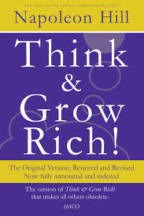

The 7 Habits of Highly Effective People by Stephen. R. Covey
The title of this book doesn’t capture it all. Covey shares with us seven habits one should adapt to become truly effective in whatever you would like to achieve. Of course, it is not as easy as it sounds. He stresses the fact that we need to go through a paradigm shift
Think and Grow Rich by Napoleon Hill
A from 1937, this book by Hill is a masterpiece. Don’t bother with the edited versions since they all omit important and controversial information: some historical, and some pertaining to the goal of the book, which is to think and grow rich. The word rich might imply that this book is all about material gain,
Feeling Good by David D. Burns
Cognitive Behavioral Therapy is the most effective therapy used by psychologists today. It consists of identifying thought patterns that have a detrimental effect on your self-image and mood; and deconstructing these in order to break out of these destructive cycles. If you want to know how this works, which moods are central in your life, what thought patterns are causing your depression, how to overcome self-judgment and guilt, how to defeat approval and love addiction and how your self-perfectionism is hindering you, then don’t look further.